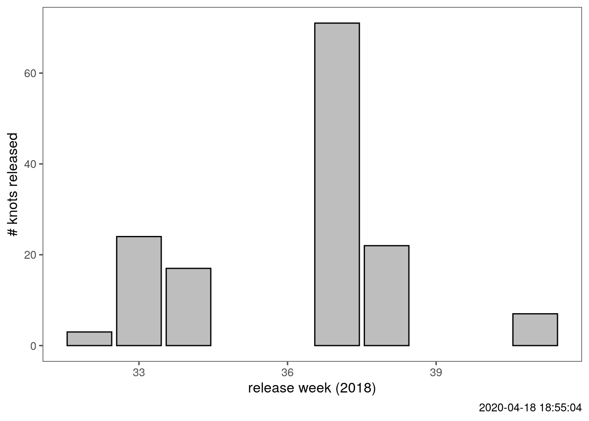

Section 2 Getting data
This section focusses on accessing and downloading WATLAS data. This is done using functions in the WATLAS Utilities package.
Workflow
- Preparing required libraries.
- Reading tag data with deployment start dates from a local file. This file is not yet publicly available.
- Connecting to the NIOZ databse and downloading data. This database is also not public-access.
2.1 Prepare watlastools and other libraries
# install the package watlastools from master branch using the following
# install.packages("devtools")
library(devtools)
# devtools::install_github("pratikunterwegs/watlastools")
library(watlastools)
# libraries to process data
library(data.table)
library(ggplot2)
library(ggthemes)
library(purrr)
library(glue)2.2 Read in tag deployment data
# read deployment data from local file in data folder
tag_info <- fread("data/data2018/SelinDB.csv")
# filter out NAs in release date and time
tag_info <- tag_info[!is.na(Release_Date) & !is.na(Release_Time),]
# make release date column as POSIXct
tag_info[,Release_Date := as.POSIXct(paste(Release_Date, Release_Time, sep = " "), format = "%d.%m.%y %H:%M", tz = "CET")]
# check new release date column
head(tag_info$Release_Date)## [1] "2018-09-14 20:00:00 CEST" "2018-09-13 15:30:00 CEST" "2018-09-14 20:00:00 CEST"
## [4] "2018-09-13 18:30:00 CEST" "2018-08-11 15:00:00 CEST" "2018-08-16 18:04:00 CEST"

(#fig:plot_release_schedule)Knots released per week of 2018.
2.3 Get data and save locally
# read in database access parameters from a local file
data_access <- fread("data/access_params.txt")# create a data storage file if not present
# use the getData function from watlastools on the tag_info data frame
# this is placed inside a pmap wrapper to automate access for all birds
if(!dir.exists("data/data2018")) { dir.create("data/data2018") }
pmap(tag_info[,.(Toa_Tag, Release_Date)], function(Toa_Tag, Release_Date){
prelim_data <- watlastools::wat_get_data(tag = Toa_Tag,
tracking_time_start = as.character(Release_Date),
tracking_time_end = "2018-10-31",
username = data_access$username,
password = data_access$password)
setDT(prelim_data)
# prelim_data[,TAG:= = as.numeric(TAG) - prefix_num]
message(glue('tag {Toa_Tag} accessed with {nrow(prelim_data)} fixes'))
fwrite(prelim_data, file = glue('data/data2018/{Toa_Tag}_data.csv'),
dateTimeAs = "ISO")
})